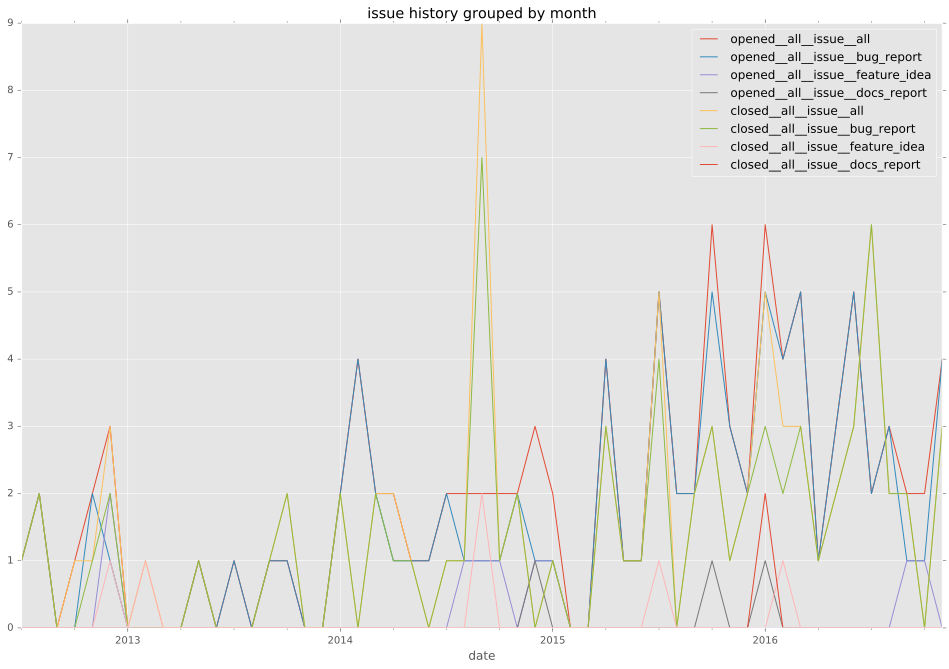

authors
- mattupstate
maintainers
- mattupstate
contributors
- cinerama70 : 3 commits
- risaacson : 1 commits
- dvarrazzo : 1 commits
- apollo13 : 1 commits
- stoned : 2 commits
- jpmens : 10 commits
- garaden : 1 commits
- eyecat : 1 commits
- njharman : 8 commits
- mpdehaan : 3 commits
- james-prior : 2 commits
- sfromm : 2 commits
- mavimo : 11 commits
- neomantra : 1 commits
- jctanner : 5 commits
- dagwieers : 1 commits
- cybertoast : 1 commits
- mscherer : 4 commits
- mattupstate : 13 commits
- wbolster : 5 commits
- jhoekx : 3 commits
- rcutmore : 7 commits
- y-p : 2 commits
- felix-engelmann : 2 commits
- giovtorres : 1 commits
- abadger : 26 commits
- sivel : 1 commits
- bcoca : 17 commits
- joelthompson : 20 commits
- stefano-m : 3 commits
total issue counts
unknown: 7
bugfix pull request: 84
docs report: 6
pullrequest: 115
docs pull request: 5
feature pull request: 21
feature idea: 12
issue: 98
bug report: 78
issue history

pullrequest history


days open by issue type
feature pull request
count: 32
std: 81.3832963661
min: 0
max: 309
median: 41.0
mean: 66.28125
all
count: 264
std: 69.478992785
min: 0
max: 472
median: 0.0
mean: 27.5189393939
pullrequest
count: 0
std: nan
min: nan
max: nan
median: nan
mean: nan
docs pull request
count: 9
std: 5.30984410736
min: 0
max: 12
median: 1.0
mean: 3.77777777778
docs report
count: 5
std: 176.263155537
min: 0
max: 397
median: 1.0
mean: 81.8
bugfix pull request
count: 136
std: 27.062317135
min: 0
max: 210
median: 0.0
mean: 6.71323529412
feature idea
count: 8
std: 164.664539942
min: 0
max: 472
median: 33.0
mean: 99.875
issue
count: 0
std: nan
min: nan
max: nan
median: nan
mean: nan
bug report
count: 66
std: 83.7419223395
min: 0
max: 361
median: 0.5
mean: 45.2424242424
closures grouped by total days open